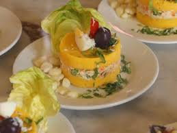
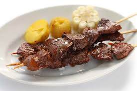
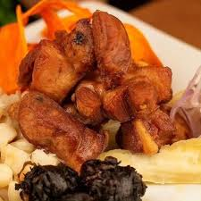
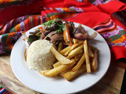
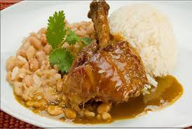
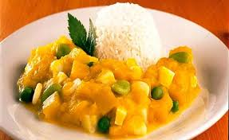
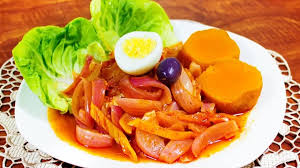
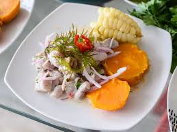

Arroz con Pollo

El arroz con pollo es un plato típico de América Latina y España con variaciones regionales según el país. Consiste en arroz cocinado con pollo, en presas o desmechado, verduras, y sazonado con especias.
Ají de Gallina

El ají de gallina es un plato típico de la gastronomía peruana, concretamente de la costa, que consiste en un ají o crema espesa con pechuga de gallina deshilachada. Esta crema es servida con papas cocidas, y en ocasiones con arroz blanco. Es común reemplazar la gallina por
Causa Limeña
La causa a la limeña, causa limeña o simplemente causa, es un entrante típico y muy extendido de la gastronomía del Perú, que tiene origen precolombino.
Anticuchos de Brocheta
El anticucho es un tipo de brocheta de origen peruano, que posteriormente se volvió popular en algunos países sudamericanos con diferentes variaciones. Consiste en carne y otros alimentos que se asan ensartados en un pincho.
Chicharron de Cerdo
El chicharrón es una comida que en algunos países se obtiene tras derretir la grasa del cerdo, en otros se usa la grasa del cerdo para cocinar la carne y en otros consiste en una fritura de la piel del cerdo con o sin carne.
Lomo Saltado
El lomo saltado es un plato típico de la gastronomía del Perú consistente en carne de res, arroz cocido y papas fritas. Es uno de los platos más consumidos popularmente en el Perú.
frejoles con seco de Pollo
scurre el agua del frejol remojado y ponlo a hervir junto con dos cucharas de cebolla, ajos y la papada de chanchito. Hasta que el agua se tape. Si ves que va faltando agua agregale pero caliente para que el frejol no se endurezca.
Locro de Zapallo
El locro o lojro es una especie de guiso de origen prehispánico y preincaico, típico de varios pueblos andinos, a base de zapallo, maíz ─especialmente blanco─, poroto blanco y papas, originario del área de la cordillera de los Andes, en Colombia, Ecuador, Perú, Bolivia, Paraguay, Chile y Argentina.
Escabeche de Pollo
El método para procesar un alimento en escabeche está dentro de las operaciones denominadas en cocina como marinado, y la técnica consiste básicamente en el precocinado mediante un caldo de vinagre, aceite frito, vino, laurel y pimienta en grano. Es la transformación de una preparación de la cocina árabe.
Ceviche de Mariscos
e forma básica, el ceviche peruano se hace con pescado blanco (lenguado, mero, o incluso peces amazónicos, según la zona), lima exprimida, sal, pimienta, ají o guindilla al gusto, cebolla roja, cilantro y, en ocasiones, cancha (maíz frito) o choclo (hervido).